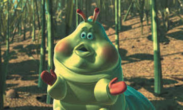

Dylan Martin

100 Address Street
New York City, New York
Summary
Heimlich is an obese lime caterpillar with a German accent who works as a clown. He is very gluttonous and always seems to be eating.
Even during a performance, he offered to help finish one of the audience's candy corns.
The fly refused, but then it turned out that he got the candy corn anyway.
Education
Clown College
B.A. in Magic Tricks, Minor in Juggling
Graduated 2016 || GPA: 4.0
Work Experience
Clown at Circus
Duties Included:
- Juggling for several minutes
- Poorly executed sleight of hand magic
- Doing the worm, but as a caterpillar
About Me
Contact Me